Un thème de l'épreuve de mathématiques (U41, coefficient 2) du BTS Opticien-Lunetier. Il est tombé à chacune des 5 sessions analysées. Sur cette page : 3 définitions à savoir et 3 questions corrigées.
Remplacer un nuage de points par une droite qui l'approche au mieux, pour faire des estimations ou des prévisions.
Pour comprendre : Il n'est pertinent que si les points sont à peu près alignés ; si le nuage est courbe, on fait d'abord un changement de variable (par exemple z = ln(y − k)).
À savoir par cœur
Coefficient de corrélation linéaire
Probable
Utilisée dans les sujets 2016, 2017, 2018, 2023
Nombre r compris entre −1 et 1 qui mesure à quel point les points d'un nuage sont alignés.
Pour comprendre : Plus |r| est proche de 1, plus l'ajustement affine est justifié ; le signe de r indique seulement si la série monte ou descend.
À savoir par cœur
Droite de régression (méthode des moindres carrés)
Probable
Utilisée dans les sujets 2016, 2017, 2018, 2022, 2023
Droite de y en x qui rend minimale la somme des carrés des écarts verticaux entre les points du nuage et la droite.
Pour comprendre : Elle passe par le point moyen du nuage.
À savoir par cœur
Trois questions corrigées
Cherche d'abord ta réponse, puis ouvre la correction.
Type BTS 2022 · Niveau facile
Le nuage de points des ventes d'une lentille de couleur forme une courbe qui descend vite puis se tasse. Pourquoi un ajustement affine de y en x n'est-il pas adapté ?
Parce que les points ne sont pas alignés
Parce que y diminue
Parce que le coefficient de corrélation est négatif
Parce qu'il y a moins de 10 points
Voir la correction de la question 1
Réponse A. Parce que les points ne sont pas alignés
Un ajustement affine suppose des points à peu près sur une droite. Ici l'allure est courbe (type exponentielle). Une série qui diminue peut très bien être affine, et un r négatif veut seulement dire « décroissant » : ce sont des pièges.
Type BTS 2023 · Niveau moyen
Après le changement de variable z = ln(y − 20), la calculatrice donne r ≈ −0,998 pour la série (x ; z). Que conclure ?
Ajustement affine non pertinent, car r est négatif
Ajustement affine pertinent, car |r| est très proche de 1
Impossible à dire sans tracer le nuage de points
Ajustement pertinent, car y est proportionnel à x
Voir la correction de la question 2
Réponse B. Ajustement affine pertinent, car |r| est très proche de 1
C'est la valeur absolue de r qui compte : |r| = 0,998, très proche de 1, donc les points (x ; z) sont presque alignés. Le signe − indique seulement que z diminue quand x augmente.

Type BTS 2018 · Niveau moyen
Avec z = ln(y − 20), on trouve la droite z = −0,5x + 5. Quelle est l'expression de y ? (e⁵ ≈ 148)
y = 20 + 148 e^(−0,5x)
y = 148 e^(−0,5x) − 20
y = 20 − 0,5x + 5
y = 20 + 5 e^(−0,5x)
Voir la correction de la question 3
Réponse A. y = 20 + 148 e^(−0,5x)
ln(y − 20) = −0,5x + 5 donc y − 20 = e^(−0,5x + 5) = e⁵ × e^(−0,5x) ≈ 148 e^(−0,5x). D'où y = 20 + 148 e^(−0,5x).
Le QCM compte 6 questions sur ce thème. Chacune est corrigée et expliquée, et celles que tu rates reviennent toutes seules à 1, 3, 7, 14 et 30 jours.